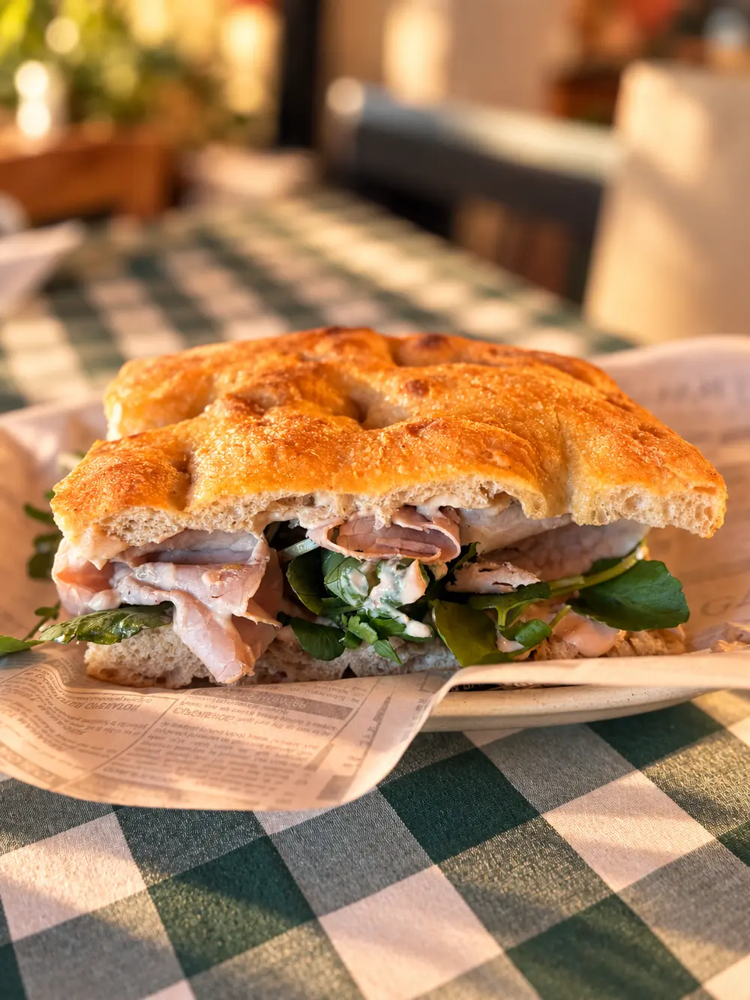
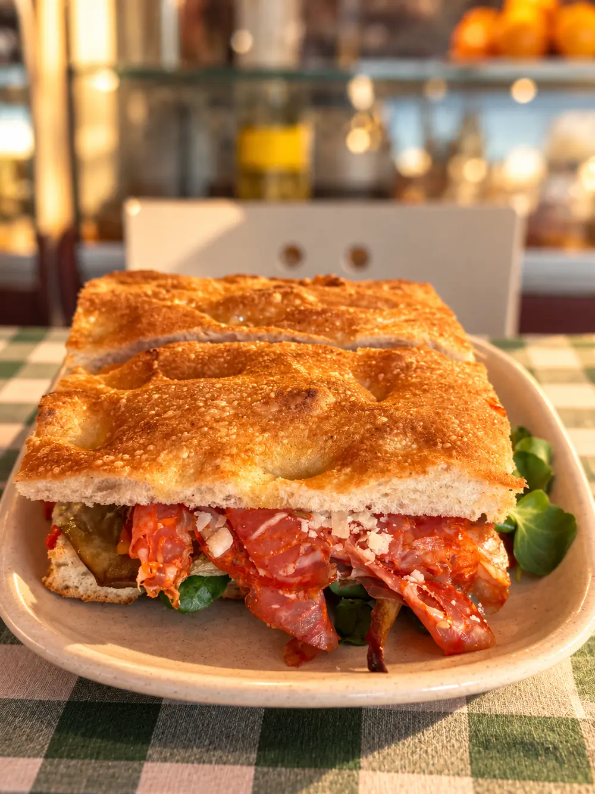
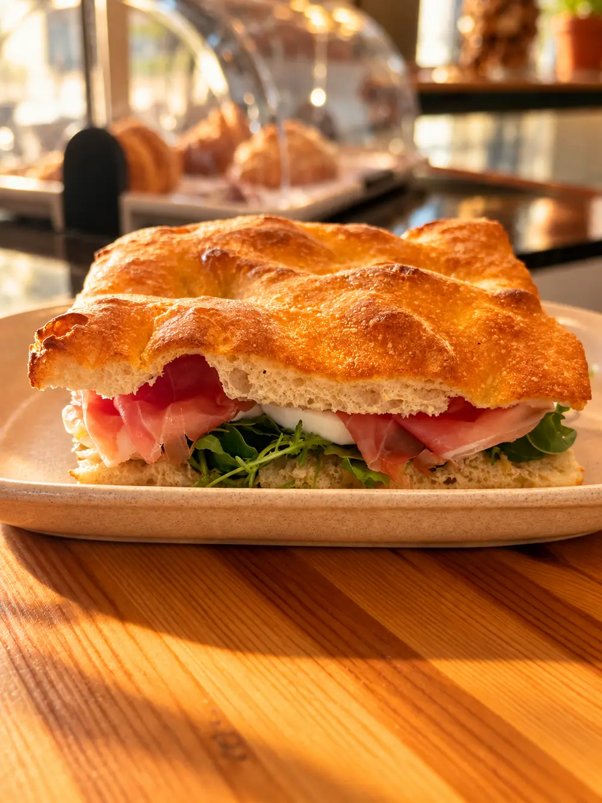
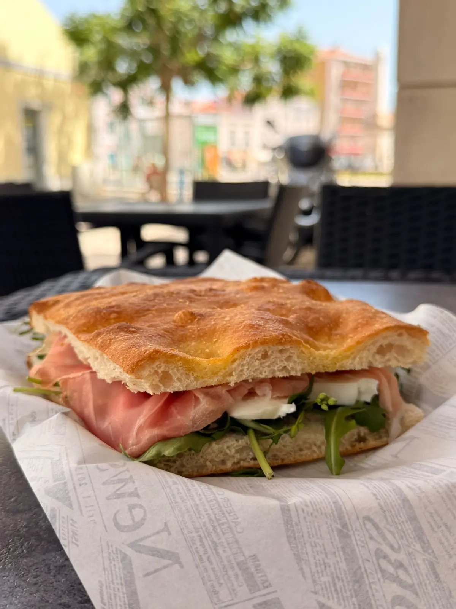
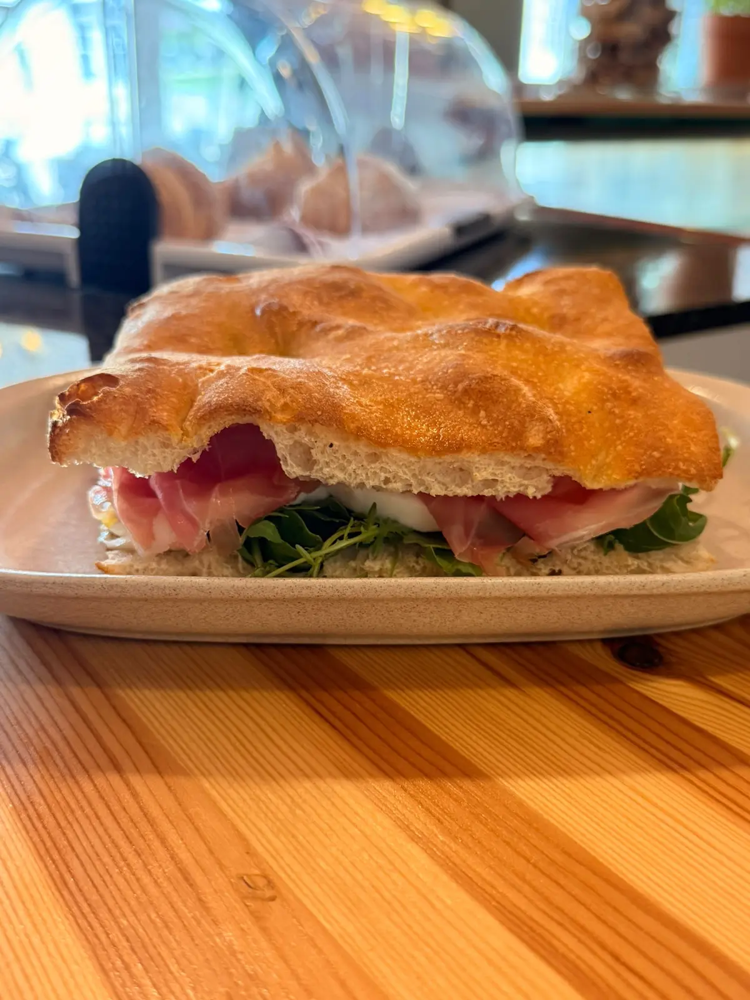
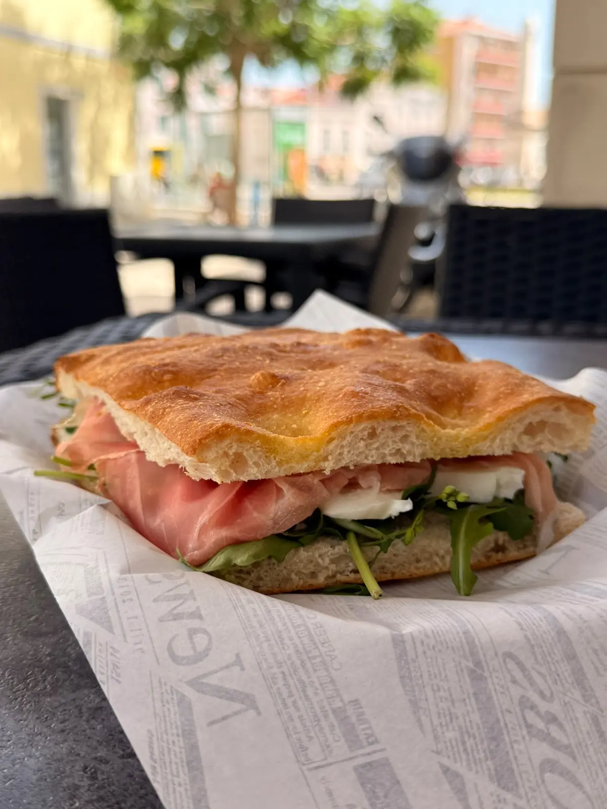

01
Feita com calma.
Pão artesanal, recheios generosos e atenção a cada detalhe.
Focacceria artigianale · Setúbal
Conceito visual · baseado na focaccia da casa
01 · A história

Gabriele traz a tradição italiana e quinze anos de experiência em padaria e pizzaria. Janainy junta-lhe a sensibilidade para receber, comunicar e criar um lugar onde apetece ficar.
Da renovação do espaço à massa preparada diariamente, a Foca Foca nasceu das mãos dos próprios fundadores. Farinhas italianas, mais de 24 horas de fermentação e recheios escolhidos para deixar cada ingrediente falar.
Uma pequena parte de Itália, agora no coração de Setúbal.

Pão artesanal, recheios generosos e atenção a cada detalhe.

Sabores italianos que fazem querer mais uma dentada.

A frescura da rúcula, o queijo e o sabor delicado do presunto.

O protagonista é sempre o sabor.
O sabor ganha forma
Filme de conceito · composição ilustrativa

03 · Do buongiorno ao aperitivo
Cappuccino, cornetti, sfogliatella e cannoli para começar devagar.
Um almoço rápido que sabe a viagem. Focaccias feitas no próprio dia.
Aperol, Campari ou Limoncello Spritz. A tarde pode ficar mais um pouco.
04 · Da casa


05 · Visita-nos